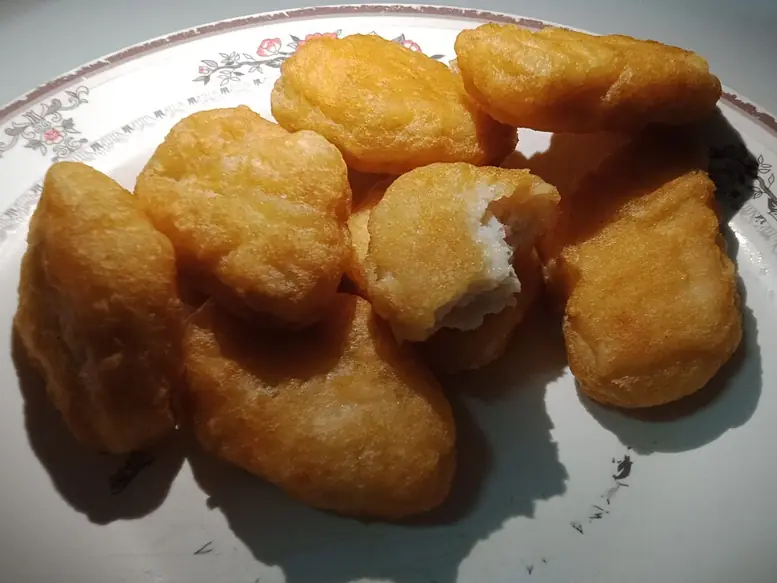

Фото: Jiafei Slay Queen, CC0

Домашние наггетсы из индейки
Хрустящие кусочки индейки в сухарях, запечённые без фритюра
40 мин4 порц.308 ккал на порциюБ 34 · Ж 9 · У 23Американская кухня
Продукты на 4 порц.
- Филе индейки500 г
- Яйцо куриное1 шт
- Мука пшеничная2 ст. л.
- Панировочные сухари80 г
- Соль0,7 ч. л.
- Паприка0,5 ч. л.
- Растительное масло1,5 ст. л.
Как готовить
- Нарежьте филе индейки кусочками 3×4 см толщиной около 1,5 см, посолите.
- Подготовьте три тарелки: мука, взбитое яйцо, сухари с паприкой.
- Обваляйте каждый кусочек в муке, затем в яйце и в сухарях, плотно прижимая.
- Выложите на противень с бумагой и сбрызните сверху маслом.
- Запекайте при 200 °C (сильный жар) 18-20 минут, перевернув в середине. Готовые наггетсы золотистые, внутри белые.
Совет. Обвалянные наггетсы можно заморозить и запекать сразу из морозилки на 5-7 минут дольше. Подавайте с домашним кетчупом или сметанным соусом.